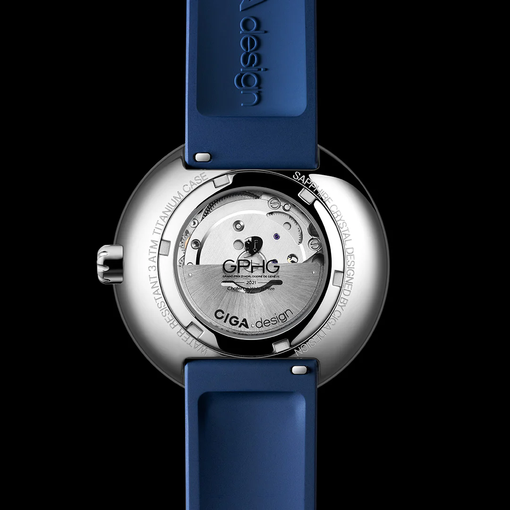
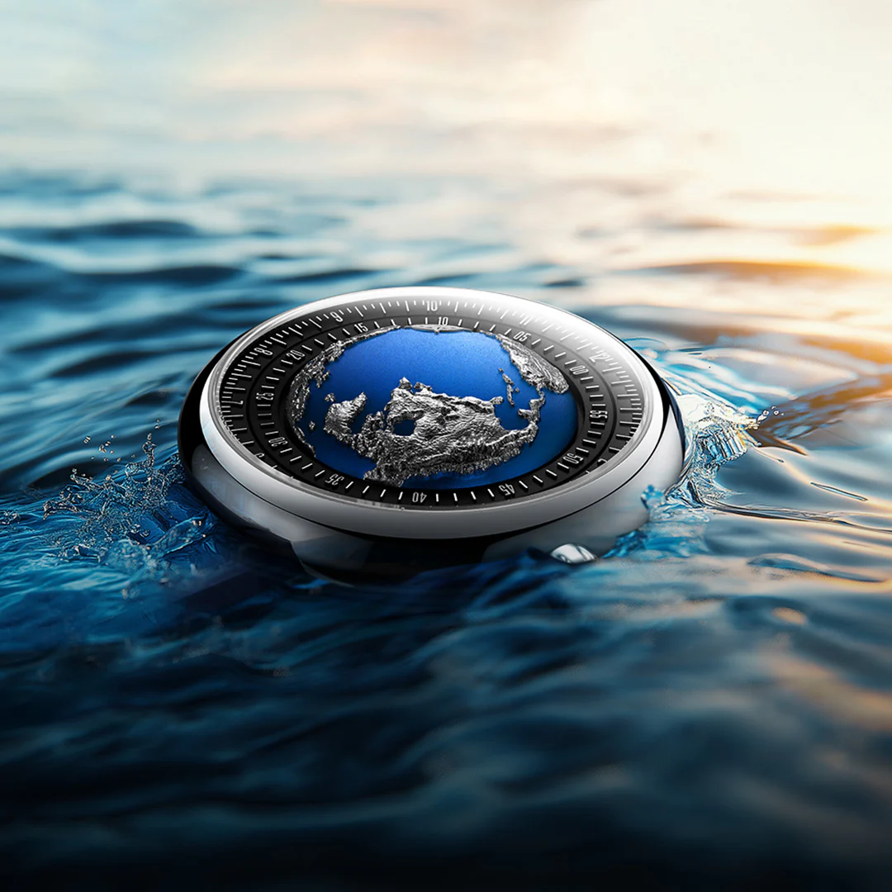
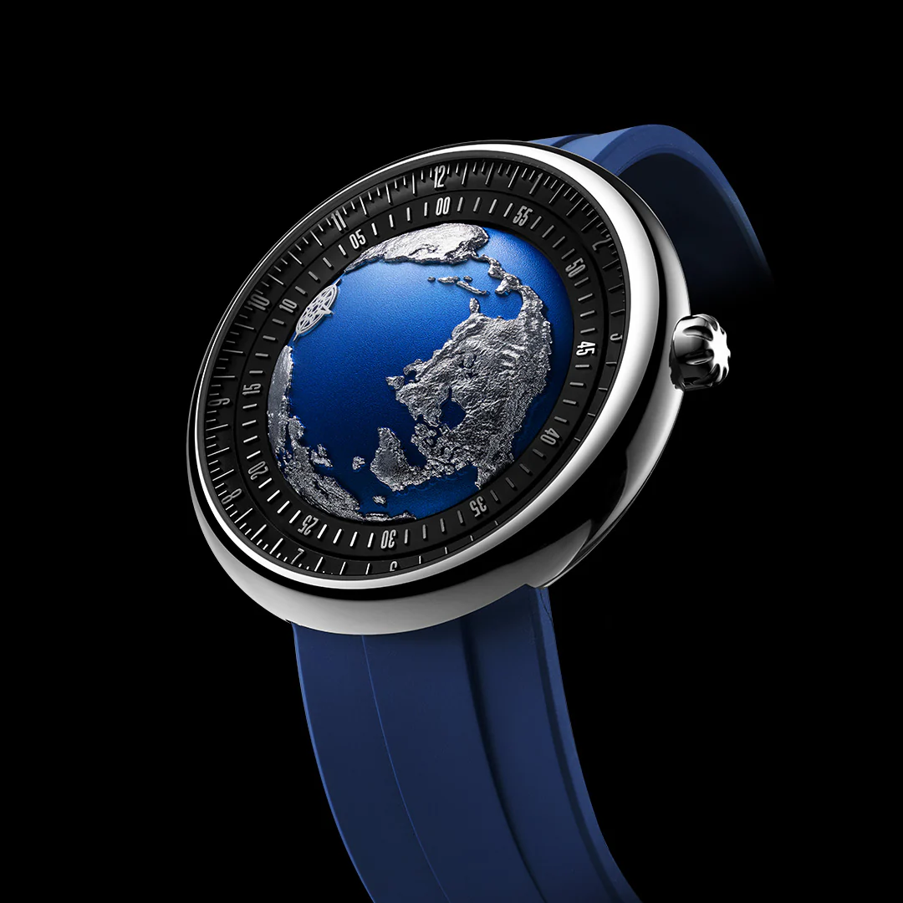
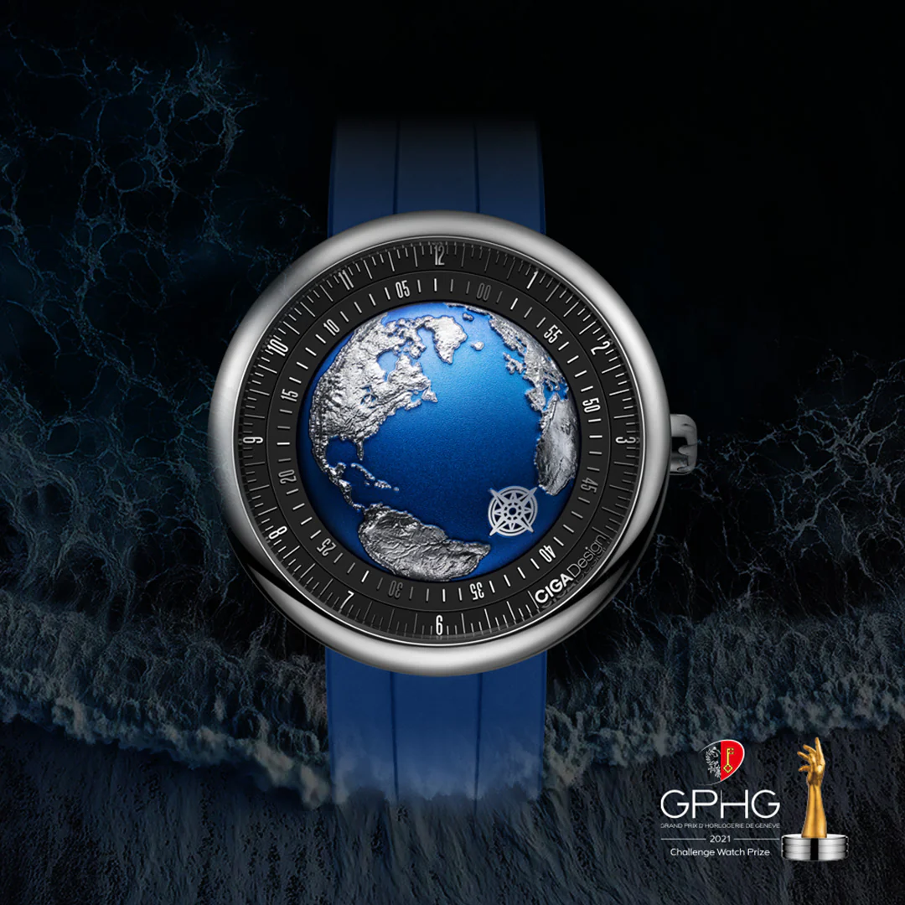
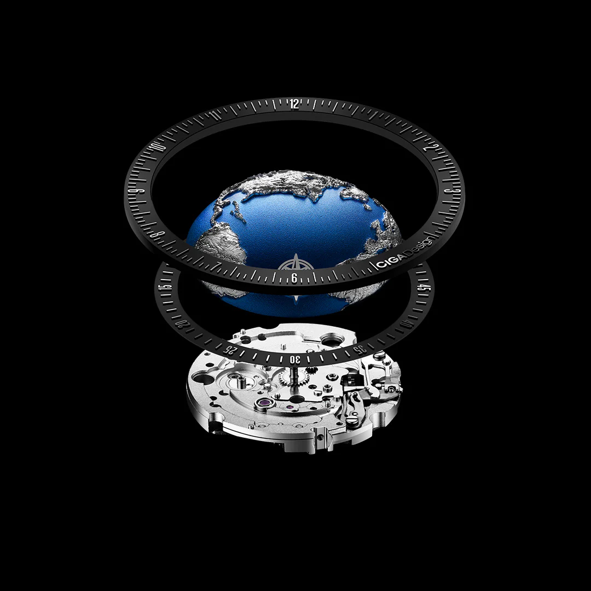
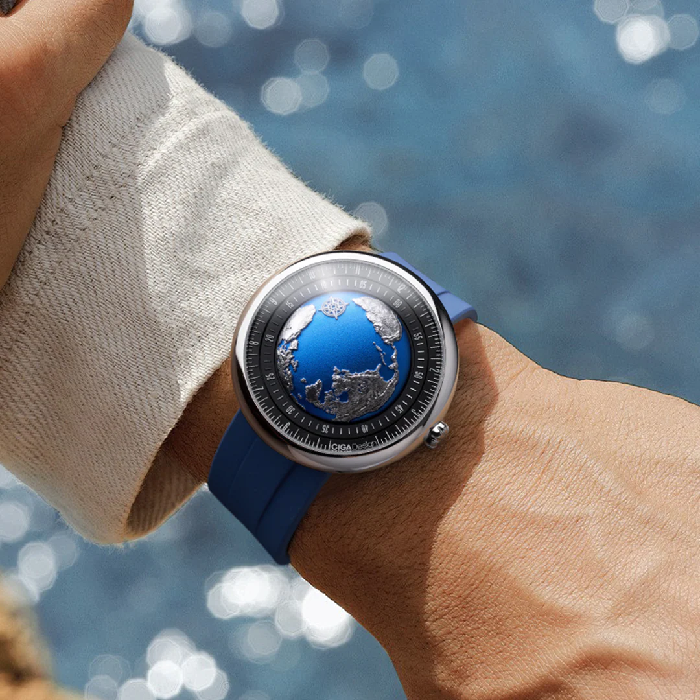

O relógio que conquistou o "Oscar da Relojoaria": uma verdadeira obra-prima de engenharia e design que traz o planeta Terra para o seu pulso.

Grand Prix d'Horlogerie de Genève 2021
Inspirado pela necessidade urgente de proteger nosso planeta, o Blue Planet II transcende a relojoaria tradicional.

A Terra, nosso único santuário azul, tornou-se frágil devido às ações humanas. Inspirada pela necessidade urgente de proteger nosso planeta, a coleção Blue Planet da CIGA design foi criada para transmitir essa mensagem profunda.
O mostrador é microentalhado com CNC, reproduzindo fielmente o relevo do terreno da Terra: continentes, montanhas e oceanos ganham vida em escala miniatura, criando uma experiência visual única e imersiva.
Em 2021, o Blue Planet se destacou entre 208 relógios inscritos no mundo todo, concorrendo a 14 prêmios de prestígio. No palco do Grand Prix d'Horlogerie de Genève: o "Oscar da Relojoaria": superou marcas renomadas como Patek Philippe e Piaget, conquistando o Challenge Watch Prize.

A CIGA design reinventou nossa percepção do tempo, inspirando-se no movimento entre dia e noite e na mudança das estações. Inspirado nos antigos relógios de sol, o Blue Planet II utiliza uma exclusiva tecnologia de movimento de acompanhamento assíncrono.
Essa tecnologia revolucionária substitui as engrenagens tradicionais para simular a autorrotação da Terra. Como resultado, um único ponto exibe tanto as horas quanto os minutos: proporcionando uma experiência única da passagem do tempo.
O design sem ponteiros tradicionais oferece uma experiência autêntica e inovadora, transformando a maneira convencional de "ler" as horas em algo verdadeiramente especial.
Tecnologia de movimento automático de alto desempenho. Funciona através do movimento natural do pulso.
Domo de curvatura dupla que oferece clareza visual absoluta, representando simbolicamente a atmosfera terrestre.
Visibilidade perfeita em ambientes de baixa luminosidade, unindo utilidade prática à estética tecnológica.
Globo terrestre entalhado com precisão absoluta, reproduzindo continentes, montanhas e oceanos.
Cada detalhe técnico reforça sua identidade como uma peça de alta relojoaria e design premiado.

| Tamanho da Caixa | 46 mm (excluindo a coroa) |
| Comprimento Total | 220 mm (incluindo pulseira) |
| Espessura da Caixa | 17,05 mm |
| Coroa | 6,0 mm de diâmetro, usinada em CNC com ranhuras |
| Largura da Pulseira | 22 mm |
| Vidro | Safira sintética com curvatura dupla |
| Material da Pulseira | Borracha fluorada premium |
| Material da Caixa | Titânio reciclado / Aço Inox 316L |
| Resistência à Água | 3 ATM |
| Tipo de Movimento | Automático (sem necessidade de bateria) |
| Reserva de Marcha | 40 horas |
Revolucionando as proporções de engrenagem tradicionais, este mecanismo inovador apresenta um disco de horas estacionário combinado com um disco de minutos dinâmico no mesmo plano. Nesta configuração única, o ponteiro das horas se move em um arco de 30° enquanto o ponteiro dos minutos completa uma rotação de 390°, permitindo que o tempo seja indicado a partir de um único ponto de referência: a rosa dos ventos.
Informações essenciais para garantir que sua apresentação do Blue Planet II seja precisa, autêntica e impactante.
Como embaixador do Blue Planet II, você está apresentando muito mais que um relógio: está compartilhando uma filosofia de design, inovação tecnológica e consciência ambiental. Siga estas diretrizes para transmitir a essência da marca com precisão e autenticidade.
Cada ângulo narrativo abaixo foi construído para maximizar o impacto do seu conteúdo sobre o Blue Planet II.
| # | Direcionamento | Foco Narrativo | Base do Script (Exemplo) |
|---|---|---|---|
| 01 | O Peso da Premiação | O GPHG é o "Oscar da Relojoaria". | "Não é apenas um relógio; é o vencedor do GPHG, competindo e superando gigantes como Patek Philippe e Piaget." |
| 02 | Microescultura CNC | A precisão do relevo terrestre no mostrador. | "O que você vê não é uma impressão, mas uma microescultura em CNC que reproduz fielmente a topografia do nosso planeta." |
| 03 | Movimento Assíncrono | A tecnologia exclusiva Asynchronous-Follow. | "A CIGA design reinventou a leitura do tempo com um movimento que simula a rotação da Terra, dispensando ponteiros tradicionais." |
| 04 | A Rosa dos Ventos | O único ponto de referência para horas e minutos. | "A leitura é intuitiva e poética: um único ponto na Rosa dos Ventos indica a passagem exata de horas e minutos." |
| 05 | Atmosfera de Safira | O domo de safira com curvatura dupla. | "O cristal de safira abaulado não protege apenas o mostrador; ele simboliza a atmosfera que protege o nosso mundo." |
| 06 | Consciência Ambiental | A mensagem "Only One Earth". | "Este projeto carrega um manifesto de preservação. É um lembrete no pulso de que o nosso santuário azul é único e frágil." |
| 07 | Engenharia de 10 Anos | O tempo de desenvolvimento do conceito. | "Foram 10 anos de pesquisa e desenvolvimento para chegar a este nível de inovação técnica e estética." |
| 08 | Materiais Nobres | Titânio reciclado e borracha fluorada. | "A combinação do titânio de grau aeroespacial com o conforto da borracha fluorada premium entrega uma ergonomia impecável." |
| 09 | Experiência Literária | O unboxing em formato de livro. | "A experiência começa na embalagem, que se apresenta como um livro, contando a história da evolução da marca e do planeta." |
| 10 | Movimento Automático | A vida do relógio através do movimento do usuário. | "Um mecanismo automático de alta performance que ganha vida com o seu próprio movimento, sem a necessidade de baterias." |
Imagens oficiais do Blue Planet II disponíveis para uso em seu conteúdo.



Compre direto no site oficial da CIGA design Brasil. Garantia, parcelamento e envio para todo o país pela JG Importadora.
Descontos cumulativos: 5% no Pix e mais 5% se for a sua primeira compra.
Comprar no Site Oficial usecigadesign.com.br